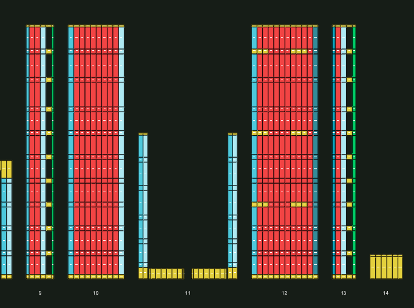
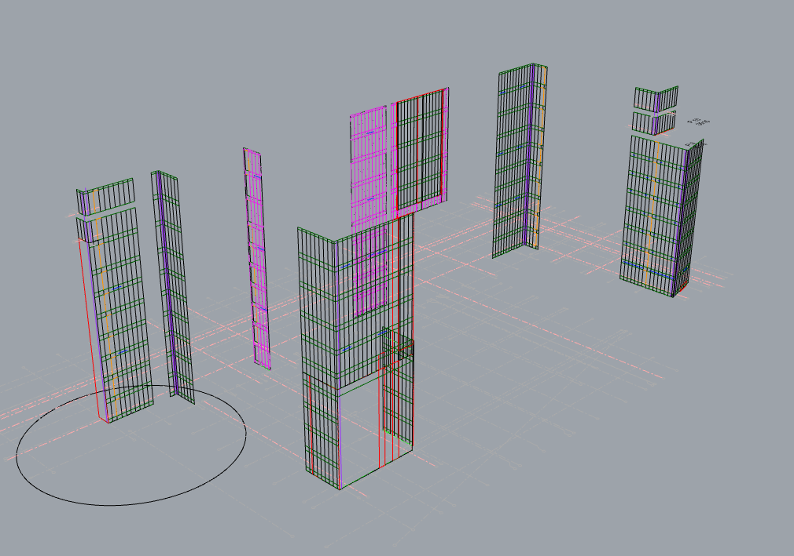
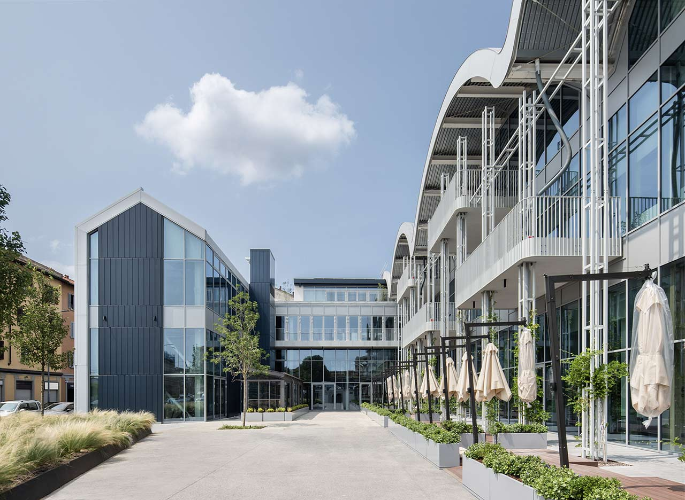
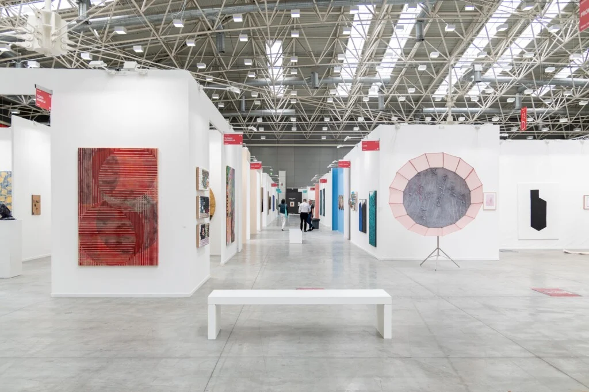
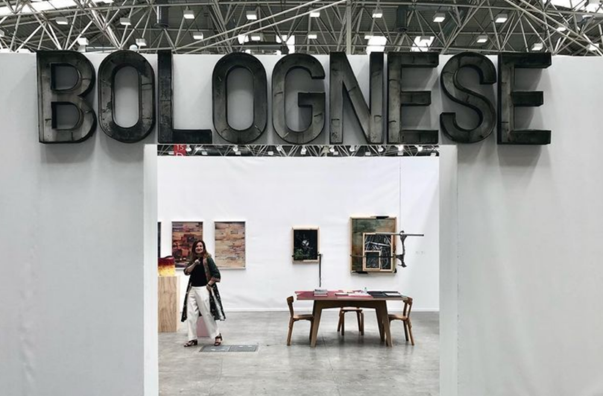
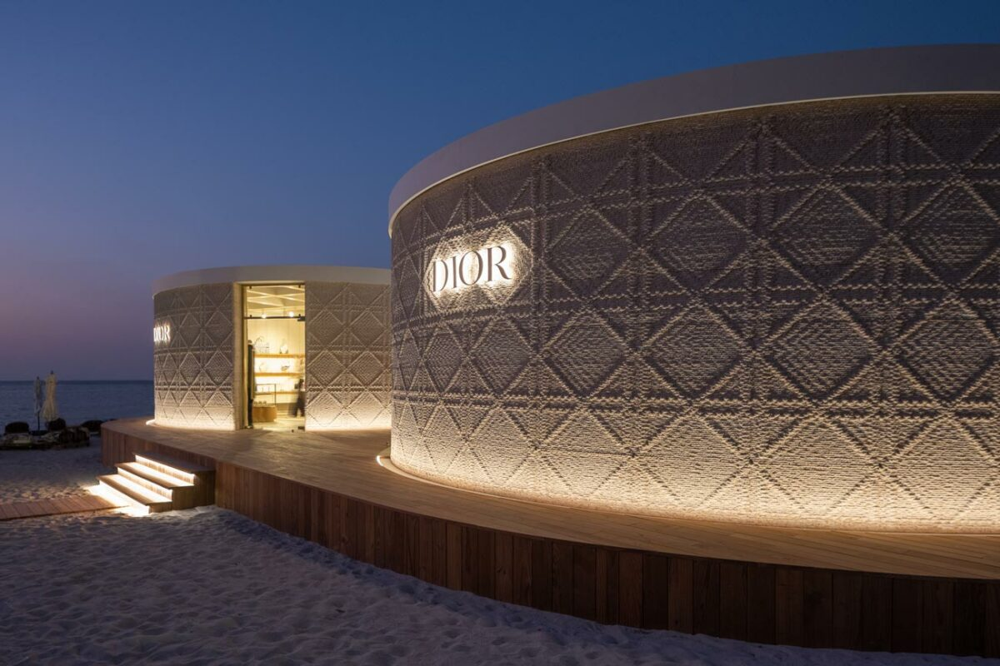
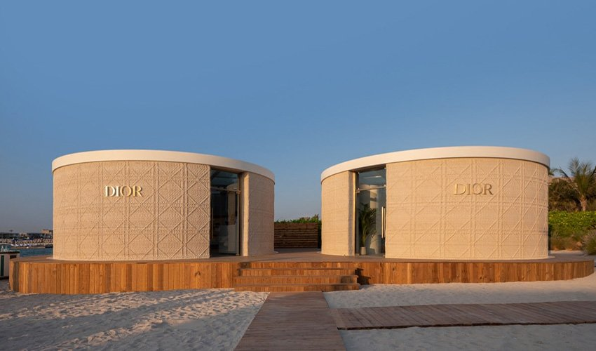
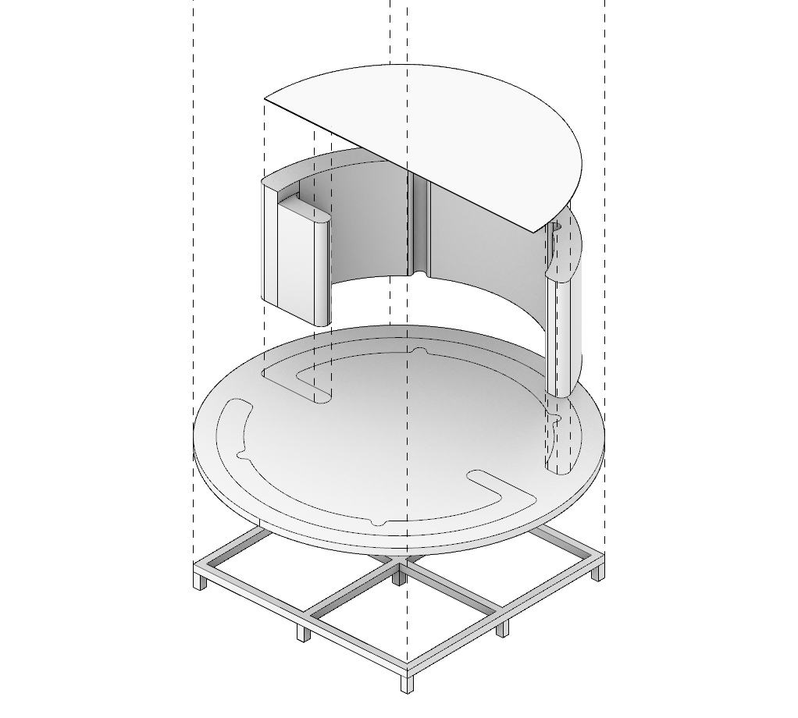

Computational Designer and Product Owner
at
Zuru
since
2023
Managing implementation of new features for a
revolutionary AEC Software. Developing GH solutions both
for mockups of software features and for fabrication of
various pieces in factory. Product Owner role, gathering
requirements and organizing the work of two teams.
Computational Designer
at
C41
in
2022
Design of digital tools improving the existing project
workflow. Façade generator algorithm in Grasshopper with
custom C# and python components. Rhino Python plugin for
tracking and storing custom 3D components.
Varesina 204, renovation on historic building for Whirpool
headquarters: Façade design with SteelPool Cantieri,
winner of UrbanFile Prize 2023.

×

Façade generation results, with panels divided by type and exported both in dxf and xls

×

Automated design process

×

Final look of Varesina 204, winner of UrbanFile Prize 2023
Architectural Designer
at
Enarco
in
2022
Architectural design, production of floorplans,
elevations and sections. 3D modeling and rendering.
Worksite assistance and building regulations.
Booth Designer
at
Henoto
in
2021-22
Exhibition stands design, 3D modeling and rendering.
Worksite coordination at event level (ArteFiera 2022).

×

Artefiera 22 Exhibition

×

Artefiera 22 Exhibition - Bolognese's Stand
Project Control
at
BF Engineering
in
2021
Control and archive service of installation projects at
the technical office of BolognaFiere.
Computational Design Stage
at
WASP 3D
in
2021
Team work on the architectural design of artifacts at
different scales. Use of the main 3D printing
technologies at architectural scale.
Dior Pop-Up Store at Expo21 in Dubai, winner of the International Architecture Awards 2024.
Developing of the Eco-Village at "Duna degli Orsi", Marina di Ravenna (RA).

×

Dior Pop-Up Store at Expo21 in Dubai, Winner of IAA24

×

Day-view of Nammos Beach, Dubai

×

Dior Pop-Up Store at Expo21 in Dubai
×

Render view of single unit in Eco-Village "Duna Degli Orsi"
Quality Control
at
BFServizi
in
2018-21
Control of the assembly of stands on-site. Control,
notification and correction of any problems in the
process of setting up and building exhibition stands.